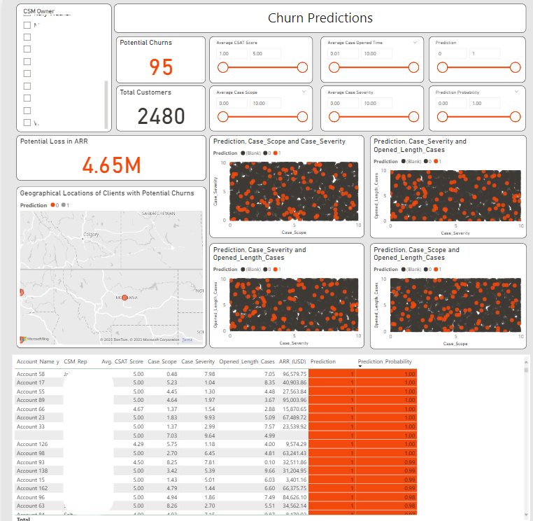

Churn Prediction Project
Project Description
I lead a cross-functional project with Sales, Customer Success, and Support teams within CentralSquare to develop a predictive tool for customer churn, powered by machine learning. To first understand the needs of the organization, I led Customer Success Management (CSM) interviews to fully comprehend the datasets I obtained and to contextualize my data management and reporting.
In undertaking this inquiry, I deployed admissions, demographics, and previous education datasets. I further analyzed the competitor landscape to give insight into the Information Schools at relevant insitutions. My comprehensive report of competitors included the types of programs provided, the technical level of their curricula, the availability of internships and other experiential learning opportunities, and the job prospects and salaries for graduates.
Initial Findings
In my initial CSM interviews, it became clear that the working procedure for predicting customer churn was based solely on impressions and subjective reporting. CSMs wanted a solution to streamline planning and determine which customers were the most at risk.
My initial machine learning solution used a Logistic Regression model to depict trends. After developing this first iteration, I brought my findings to key stakeholders at the organization, including the Director of Customer Success and Director of Product Support. In this presentation, I conveyed my findings at a high level, helping stakeholders how the tool could be used and the benefits of using this methodology for sales, CSMs, and support teams.
Outcomes
The initial model showed an 88% accuracy rate with simple feature selection and data cleaning, a number that would undoubtably be improved upon with further resources devoted to its development – which have not yet been allocated by the organization.
Already, this work has led to further development of supporting procedures. I created a plan to develop data integrity checks to ensure data parity, this would aid in model predictions and training. Data integrity enables real-time reporting and understanding of which customers are about to churn from the organization.
To enable rapid reporting and visibility across the organization, I created a dashboard to give CSMs the visibility and tooling they wanted. This tool allows CSMs to plan their accounts based on the model and the prediction probability for the likelihood of a client churning to other organizations. The dashboard below has been randomized.
Next Steps
While presenting my work to key stakeholders, I gained further context on what adjustments and future developments would be especially helpful to CSMs. While I’ve been able to begin these changes, a full-time data scientist position devoted to this tool would be needed to continue model training and hyperparameter tuning to increase accuracy level and improve the tool.